Lecture 17: Multimodality
Video blocked (ad-blocker or local file mode).
Watch on YouTubeVideo not loading? Watch on YouTube
Original lecture. Percy Liang on CLIP, VLMs, and the path to omni models.
Coverage and sourcing
This lesson follows Lecture 17 of CS336 (Spring 2026, Percy Liang), “Multimodality.” Claims are referenced with timestamps from the official subtitle transcript. CLIP details are from Radford et al. (arXiv:2103.00020), SigLIP from Zhai et al. (arXiv:2303.15343), LLaVA from Liu et al. (arXiv:2304.08485), all verified. Qwen3-VL details are from the technical report (arXiv:2511.21631), verified: SigLIP-2 encoder (SigLIP2-SO-400M default), interleaved M-RoPE, DeepStack, 2x2 merger, timestamp tokens. Frontier omni-model internals are undisclosed: marked [uncertain]. The coverage map at the end maps every major lecture claim to its section.
The problem: the omni model
The North Star: any combination of modalities in, any combination out. Image plus video in, answer plus generated image out 01:05 ⏱01:05. Transformers speak tokens, so the whole problem is tokenization: what is the image equivalent of BPE? A pixel is not a semantic unit, so the answer takes work 01:57 ⏱01:57.
Subchapter: the North Star, stated concretely
Any combination of modalities in: text, image, video, audio. Any combination out: text, image, video, audio. Image plus video in, answer plus generated image out. The model is one transformer: no separate vision model bolted on, no separate image generator. The North Star is architectural unity: one token stream, one model, all modalities. Today’s models are waypoints: VLMs handle image-in/text-out, diffusion models handle text-in/image-out. The omni model does both, and video, and audio, in one.
Subchapter: why tokenization is the whole problem
Transformers speak tokens: discrete symbols in a sequence. Text has BPE: subwords that carry meaning. Images have no BPE: a pixel is not a semantic unit. A 224x224 image has 50,176 pixels. No single pixel means anything. The image equivalent of BPE must group pixels into meaningful units: patches (CLIP), discrete codes (Chameleon), or continuous embeddings (LLaVA). A patch is a 14x14 square of pixels treated as one input token. Each choice defines an architecture. The lecture’s framing: multimodality is tokenization plus everything the course already taught. Get the tokens right and the transformer does the rest.
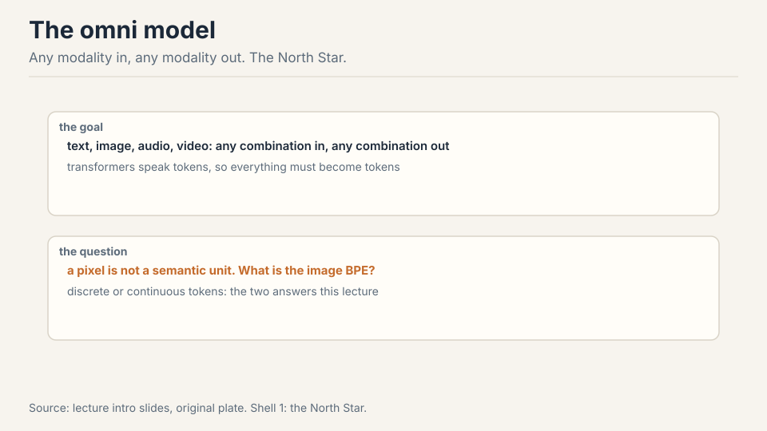
This lecture covers inputs. Generation gets its sketch at the end.
Subchapter: inputs versus generation
The lecture covers inputs: how images become tokens the transformer reads. Generation (how the transformer emits images) gets its sketch at the end. The split is practical: input tokenization is solved (patches, projectors), output generation is contested (discrete tokens vs diffusion). The input side is the lecture’s focus because it is where the VLM template won. The output side is the open question the sketch addresses.
First attempt: CLIP, contrastive learning
CLIP (2021) is the foundation of modern vision-language models. Take N image-text pairs (N=32,000). Encode each side. The objective: image I1 must be closer to its text T1 than to every other text, and vice versa. That is 2N softmax classification problems 05:53 ⏱05:53.
Subchapter: the contrastive idea, from zero
No labels. Just pairs: an image and its caption, scraped from the web. The idea: the caption describes the image, so a model that matches images to their captions must understand both. The objective is comparative: I1 must be closer to T1 than to T2, T3, …, TN. The model never sees a class label. It sees only “these two go together, those do not.” The semantics come from the text: the caption says “dog,” so the image encoder learns dog-ness to match it.
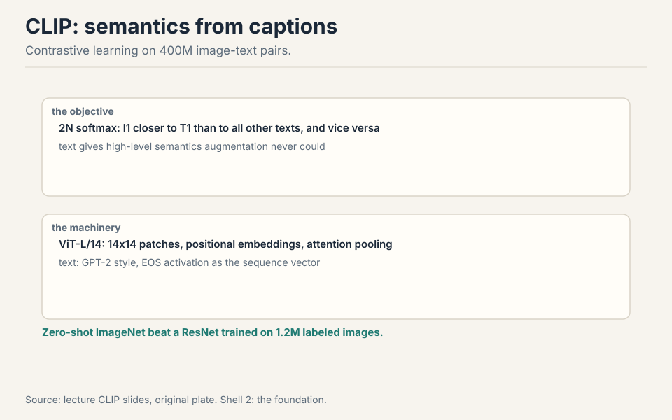
Work the toy. N=4 pairs: (I1,T1) a dog photo with “a dog”, (I2,T2) a cat with “a cat”, (I3,T3) a car with “a car”, (I4,T4) a bird with “a bird”. The loss asks: is I1 closer to T1 than to T2, T3, T4? And is T1 closer to I1 than to I2, I3, I4? Eight softmax problems. The encoders learn: pull matched pairs together, push the rest apart.
Subchapter: work the contrastive matrix
The N=4 toy, drawn as a matrix. Rows: I1..I4. Columns: T1..T4. The diagonal (I1,T1)…(I4,T4) is positive: pull together. The 12 off-diagonal cells are negative: push apart. The loss is 2N softmax problems: each row picks its column, each column picks its row. The gradient on I1: move toward T1, away from T2, T3, T4, weighted by how wrong the current similarities are.
Now scale to N=32,768. Each row’s softmax runs over 32,768 captions: 32,767 negatives per positive. That is the signal: the model must make I1 closer to T1 than to 32,767 distractors. Shrink the batch to 256: only 255 distractors, and the task gets easy: the encoders learn lazy features. The batch is not a hyperparameter. It is the objective. That is why CLIP cost 10 days on 256 TPUv3: the physics of the loss demanded it.
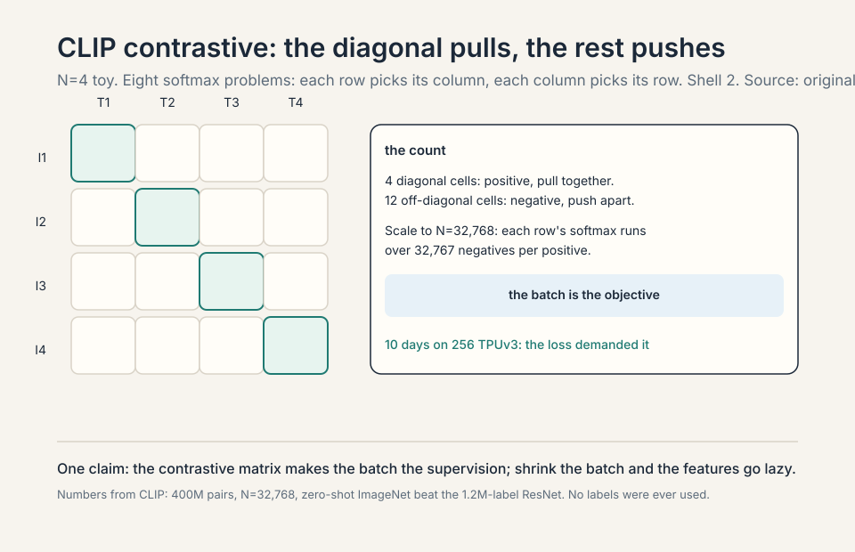
Subchapter: the two encoders
The vision encoder that won: ViT-L/14, 14x14 patches with positional embeddings through a standard transformer, attention pooling at the end 12:41 ⏱12:41. A patch is a 14x14 square of pixels treated as one input token: the image’s version of a subword. The text encoder: GPT-2 style, EOS (end-of-sequence) activation as the sequence vector 16:24 ⏱16:24.
Subchapter: why patches
A 224x224 image: 50,176 pixels. As tokens: too many, and no pixel means anything. 14x14 patches: 196 pixels per patch, 256 patches per image. Each patch is local (a texture, an edge, a color blob) and the transformer composes them. The patch is the image’s subword: small enough to be local, large enough to carry texture. The positional embeddings tell the transformer where each patch sits. Attention pooling at the end: the sequence of patch encodings collapses to one image vector (the equivalent of the text encoder’s EOS vector).
Subchapter: the text encoder’s EOS trick
The text encoder is GPT-2 style: a causal transformer over the caption’s tokens. The sequence vector is the EOS token’s activation: the last position, which has attended to everything before it. The EOS trick: the causal mask means only the final position sees the whole sequence, so its activation is the summary. Both encoders project into one shared space: the image vector and the text vector live in the same embedding space, where the contrastive loss compares them.
Data: 400M web image-text pairs, noisy by nature (captions rarely describe the image literally) 08:24 ⏱08:24.
Subchapter: 400M noisy pairs
400M image-text pairs, scraped from the web. Noisy by nature: captions rarely describe the image literally. A photo of a dog with the caption “my best friend”: the text says nothing about dogs. The contrastive loss withstands the noise: across 400M pairs, the statistical pattern (dog images near dog words) survives the mislabeled pairs. The scale compensates for the noise. This is the web-data lesson from Lecture 13 applied to vision: noisy pairs at scale beat clean pairs at small scale.
Headline: zero-shot ImageNet beat a ResNet trained on 1.2M labeled images 17:21 ⏱17:21. No labels, just captions, and it classified better than the supervised champion. Why text and not augmentation (SimCLR)? Augmentation cannot turn one dog into another dog. Text supplies high-level semantics 11:24 ⏱11:24.
Subchapter: the zero-shot headline, unpacked
Zero-shot ImageNet: encode the image, encode “a photo of a {class}” for each of the 1,000 classes, pick the closest. No ImageNet training. CLIP beat the ResNet trained on 1.2M labeled images. The mechanism: the captions taught the image encoder the class names’ semantics. “A photo of a golden retriever” matches the dog image because the caption space contains dog descriptions. The labels were never needed: the text supplied them.
Subchapter: why text beats augmentation
SimCLR’s idea: augment the image (crop, recolor), teach the model that the augmented versions are the same. The limit: augmentation cannot turn one dog into another dog. The variations are pixel-level: the model learns invariance to cropping, not the concept of dog. Text supplies high-level semantics: the caption says “dog,” and the model learns dog-ness across different dogs. The supervision is semantic, not pixel. This is why CLIP’s 400M noisy pairs beat SimCLR’s clean augmentations: the text carries the meaning the pixels lack.
Two encoders: a ViT-L/14 vision encoder (14x14 patches as tokens, positional embeddings, standard transformer, attention pooling at the end) and a GPT-2-style text encoder (EOS activation as the sequence vector). Both project into one shared embedding space. The batch: N image-text pairs, N=32,768. The loss: for each image, a softmax over all N texts (is I1 closest to T1?). For each text, a softmax over all N images. 2N classification problems. The gradient pulls matched pairs together and pushes unmatched pairs apart. After training, zero-shot classification: encode the image, encode “a photo of a {class}” for each class, pick the closest. No labels were ever used: captions supplied the semantics. The compute: 10 days on 256 TPUv3, because the loss needs 32,767 negatives per positive to be hard. Because pixels are not semantic units. A 224x224 image has 50,176 pixels: too many tokens, and no single pixel means anything. A 14x14 patch (196 pixels) is the image’s subword: small enough to be local, large enough to carry texture. 256 patches per image: a sequence the transformer can handle. The text supplies the semantics via the contrastive loss: the patches learn to be useful for matching captions. Same architecture lesson as Lecture 1: tokenize into units that carry meaning, not into atoms. The class names are text. Encode “a photo of a {class}” with the text encoder: 1,000 text vectors. Encode the image: one image vector. Pick the closest text vector. The text encoder learned the class names’ semantics from captions during contrastive training. The image encoder learned to match. No classifier was trained on ImageNet: the matching is the classifier. The prompt (“a photo of a”) matters: it matches the caption style the text encoder saw in training. Prompt engineering for CLIP is caption engineering.
Where CLIP breaks: the loss is the batch
The softmax runs over all N pairs in the batch. Small batch: few negatives, weak signal. The loss is the batch, so CLIP needs huge batches: 32,768. Work the cost: 10 days on 256 TPUv3 25:33 ⏱25:33. The batch size is not a hyperparameter here. It is the objective.
Subchapter: the batch-size trap
The trap: the loss needs 32,767 negatives per positive to be hard. Fewer negatives: the task gets easy, the features get lazy. But 32,768 pairs per batch needs 256 TPUv3 for 10 days. The batch size is not tunable: shrink it and the objective degrades. The loss couples the batch size to the compute budget. Small labs cannot afford the objective. The fix must change the loss, not the batch.
The key question
What if the loss did not depend on the batch? What if each pair could be judged on its own, positive or negative, without the softmax over everyone else? Then small batches work, and the systems win compounds.
Subchapter: judge pairs, not batches
The key question reframes the loss. CLIP asks: “among all N pairs, which is the match?” SigLIP asks: “is this pair a match?” The first needs the batch (the competition defines the question). The second needs only the pair (the label defines the question). The reframe decouples the loss from the batch: the expected loss is the same at any batch size. Small batches work. The systems win (below) compounds.
SigLIP: binary loss, decoupled batches
SigLIP replaces the 2N-way softmax with binary classification: diagonal pairs positive, off-diagonals negative, sigmoid loss 23:37 ⏱23:37. Work the toy again. N=4: 16 pair decisions, each independent. (I1,T1): positive. (I1,T2): negative. No softmax, no competition between negatives.
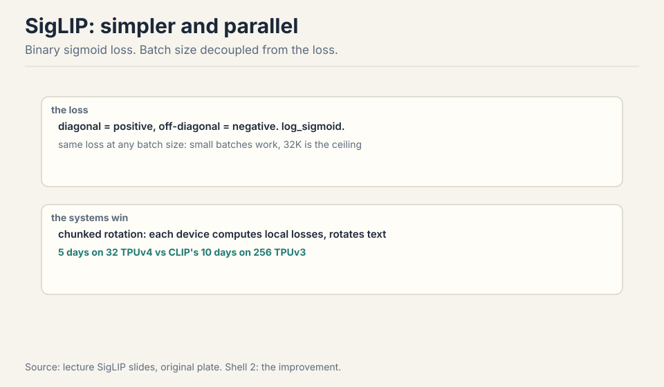
Subchapter: softmax vs sigmoid (the one-line difference)
CLIP’s loss: for each row, softmax over N columns. The negatives compete: making T2 worse helps T1 win, even if T1 is not actually close. The loss couples every pair in the batch. SigLIP’s loss: each of the N^2 pairs gets its own binary decision. (I1,T1): positive, push the sigmoid up. (I1,T2): negative, push it down. No competition: T2 being terrible does not help T1.
The consequence is statistical, not just systems. CLIP’s expected loss changes with batch size: the objective itself moves. SigLIP’s expected loss is the same at any batch size: each pair’s decision is independent of the batch. Small batches work. The ceiling at 32K: beyond that, more negatives add no signal (the model already separates them). And the systems win compounds: devices compute local losses and rotate embeddings, no global softmax, 5 days on 32 TPUv4. One loss change, 16x fewer TPU-days.
Subchapter: the systems win
Devices compute local losses and rotate text embeddings to cover off-diagonal blocks, like DDP with interactions 28:37 ⏱28:37. The mechanism: each device holds a shard of the batch. It computes the sigmoid loss on local pairs, then rotates the text embeddings (ring exchange) to score the off-diagonal pairs. No global softmax, no all-gather of the full similarity matrix. The communication is the rotation: bandwidth-efficient, overlapping with compute. Result: 5 days on 32 TPUv4 versus CLIP’s 10 days on 256 TPUv3. The loss change enabled the systems change: the sigmoid’s independence is what makes the sharding work.
The loss is now the same in expectation at any batch size, so small batches work (CLIP degrades) and 32K is the effective ceiling 27:38 ⏱27:38. Systems win: devices compute local losses and rotate text embeddings to cover off-diagonal blocks, like DDP with interactions 28:37 ⏱28:37. Result: 5 days on 32 TPUv4 versus CLIP’s 10 days on 256 TPUv3 25:33 ⏱25:33.
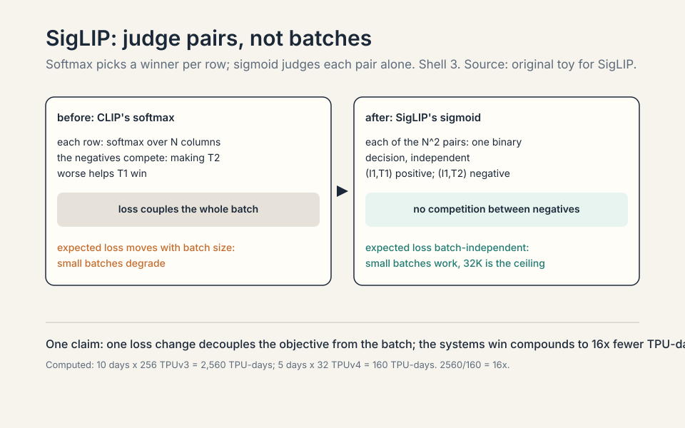
SigLIP wins on compute and flexibility: small batches work, training is 16x cheaper in TPU-days, and the loss is batch-size independent. Use SigLIP whenever you are training a vision encoder from scratch or fine-tuning one. CLIP’s softmax still has a niche: when the batch itself is the supervision (hard negatives mined within the batch matter) or when you are reproducing the exact CLIP recipe for compatibility (the open-weight ecosystem expects CLIP-style encoders). In practice the field moved: LLaVA OneVision uses SigLIP, Qwen3-VL uses SigLIP-2. The decision rule: default to SigLIP. Reach for CLIP’s loss only for compatibility. Because beyond 32K negatives, the extra pairs add no learning signal. The model already separates easy negatives perfectly: their gradients are ~0. The remaining signal comes from hard negatives, and there are only so many in the data. More batch just replays decided pairs. This is a general contrastive-learning law: the batch is useful only while it contains undecided pairs. SigLIP hits the wall later than CLIP because its loss does not degrade at small batches, so you can afford to search for the informative regime instead of being forced into huge batches by the objective. SigLIP-2 (Tschannen et al., 2025) is the improved recipe: better training (the sigmoid loss plus distillation and masked prediction auxiliaries), better localization (denser features for grounding), same binary loss at the core. Qwen3-VL uses SigLIP-2 as its vision encoder (SigLIP2-SO-400M default). The core idea is unchanged: judge pairs independently. The improvements are in what the encoder learns beyond matching: spatial precision, multilingual captions. SigLIP-2 is the current default vision encoder for new VLMs.
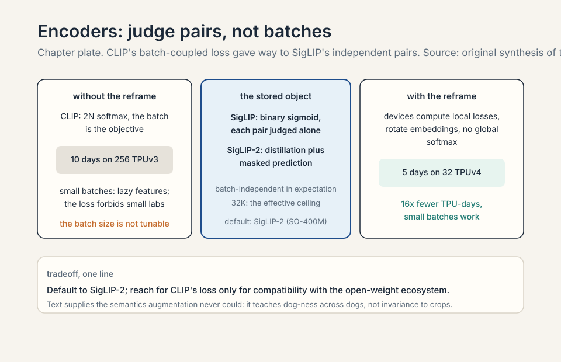
LLaVA: stitch, not rebuild
The VLM template: take a vision encoder (CLIP), take an LLM (Vicuna), stitch them with a projector, train in stages 28:58 ⏱28:58.
Subchapter: the template, stated plainly
The template has three parts. One: a frozen vision encoder (CLIP) that turns images into embeddings. Two: a frozen LLM (Vicuna) that reasons over token embeddings. Three: a projector (a matrix or small MLP) that translates the image embeddings into the LLM’s token space. The stitching is the projector. The training is staged: align the projector first, then fine-tune the LLM. The template’s bet: the two frozen components already contain everything. The only missing piece is translation.
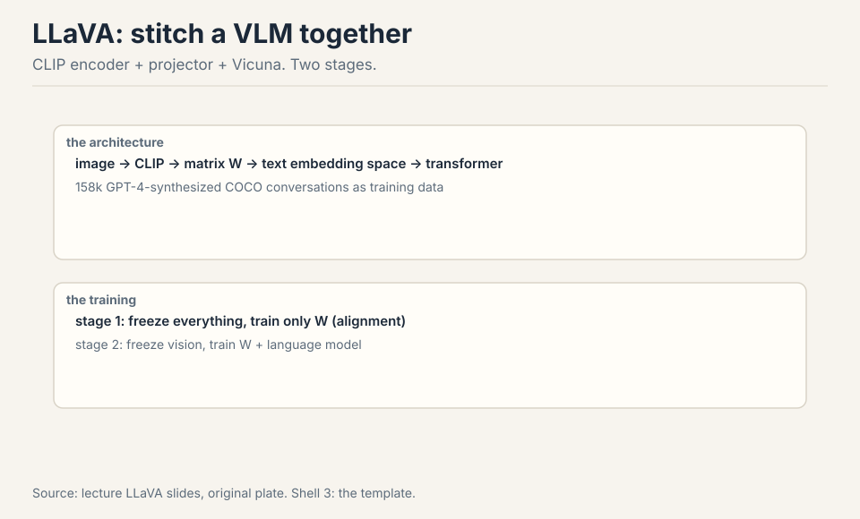
Image through CLIP, through matrix W into text-embedding space, concatenated with text tokens through the transformer. Training: stage 1 freezes everything and trains only W (alignment). Stage 2 freezes the vision encoder and trains W plus the LM 33:24 ⏱33:24. Data: 158k GPT-4-synthesized conversations from COCO captions 31:07 ⏱31:07.
Subchapter: freeze both ends (why the projector is enough)
Stage 1 trains only W: a matrix (or 2-layer MLP) mapping CLIP’s embedding space into the LLM’s token embedding space. Everything else frozen. Why this works: the two frozen components already contain everything. CLIP’s encoding is a rich semantic summary of the image. The LLM is a reasoning engine over token embeddings. The only missing piece is translation: make the image encoding look like token embeddings. That is a low-dimensional mapping problem, not a learning problem: 158k examples suffice.
Stage 2 unfreezes the LLM (not the vision encoder) and trains W plus the LM on visual instruction data. The LLM learns to reason over image tokens: to attend to them, to reference regions, to answer questions. The vision encoder stays frozen because its features are already good and retraining them on 158k examples would corrupt them. The template’s lesson: compose frozen experts, train the interfaces. Qwen’s later choice (unfreeze the encoder) is the exception that proves the rule: you do it only when the frozen features are the bottleneck (fine-grained OCR).
Subchapter: the 158k conversations
158k GPT-4-synthesized conversations from COCO captions. The recipe: take a COCO image’s captions and bounding boxes (text descriptions of the image), prompt GPT-4 to invent a conversation about the image, collect the pairs. The images are never seen by GPT-4: the captions stand in for them. The conversations teach visual instruction following: questions about the image, answers grounded in the captions. The data is synthetic (Lecture 14’s pipeline): the teacher is GPT-4, the verifier is the caption. 158k is small: the alignment needs little because the components are frozen.
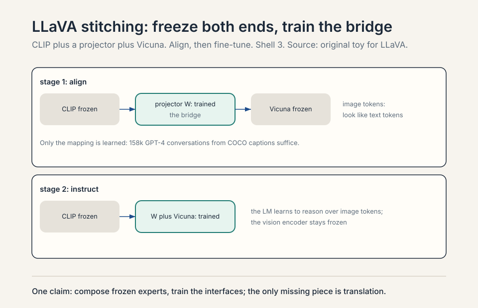
Step one: the image goes through the frozen CLIP vision encoder. A 336x336 image becomes 576 patch tokens (24x24 grid), each a CLIP embedding. Step two: the projector W maps each embedding into the LLM’s token embedding space: now they are “image tokens,” same dimensionality as text tokens. Step three: concatenate. The sequence is [image tokens][text tokens]: the transformer sees them as one sequence. Step four: the frozen (stage 1) or trained (stage 2) LLM processes the sequence and generates the answer. The image tokens are treated exactly like text tokens by the attention: the LLM attends to image regions the way it attends to words. That is the whole trick: translation at the input, then one transformer. Because each patch is a token and the grid is 24x24. Fewer tokens would mean coarser patches and lost detail. The price is context: 576 tokens per image before the question is even asked. AnyRes multiplies this: 16 crops plus overview = 17x576 = 9,792 image tokens. High resolution is paid in context length. Qwen3-VL’s merger compresses 2x2 patches into one token to cut this: the token budget is the binding constraint on resolution. A mapping from CLIP’s embedding space into the LLM’s token embedding space. After stage 1, an image encoding should “look like” a sequence of token embeddings to the transformer: same dimensionality, same rough distribution. It is alignment, not understanding: the understanding was already in CLIP and in the LLM. The projector just introduces them.
Because you would throw away two excellent pre-trained components. CLIP already knows image semantics. The LLM already knows language and reasoning. The stitching approach (projector plus staged training) reuses both and needs only 158k examples to get visual reasoning working. Joint training from scratch would need billions of image-text pairs and enormous compute to relearn what each side already knows. The tradeoff: the vision encoder stays frozen and classification-flavored (CLIP was built for ImageNet), so fine-grained abilities like OCR need extra machinery (AnyRes) or encoder fine-tuning (Qwen’s later choice). When the frozen features are the bottleneck. CLIP’s features are classification-flavored: they summarize the image’s semantics, not its fine detail. For OCR, grounding, and dense document understanding, the frozen features lose the detail the task needs. Qwen’s choice (continue training the encoder with dynamic resolutions) pays the cost of unfreezing to gain the detail. The rule: freeze when the task is semantic (what is in the image), unfreeze when the task is perceptual (read the small text, find the exact box). The template freezes by default. The exceptions are the tasks where pixels matter.
Where stitching breaks: resolution
CLIP’s 336x336 resize-and-crop cannot read documents. Work the failure: a page of text at 336x336 is about 10 pixels per character. Nothing is legible. The encoder was built for ImageNet, not OCR.
Subchapter: the 10-pixels-per-character failure
A document page at 336x336: the page is ~8 inches wide, the image is 336 pixels. A 12-point character is ~1/6 inch: ~9 pixels wide. The encoder’s patches are 14x14: each character is smaller than a patch. The text is not just blurry: it is below the encoder’s resolution. The features contain no character information. The LLM cannot read what was never encoded. The failure is at the input: no amount of projector training recovers the lost pixels.
AnyRes splits the image into encoder-sized crops, encodes each, and concatenates, plus one downsampled overview 37:36 ⏱37:36. Crop, do not downsample. A 1344x1344 document becomes 16 crops of 336x336 plus one overview: each crop is legible, the overview keeps layout. Adaptive: big images get more crops, videos get fewer tokens per frame (up to 32 frames) 40:09 ⏱40:09.
Subchapter: the token budget of resolution
Work the arithmetic. One 336x336 crop: 576 tokens. A 1344x1344 document: 16 crops plus 1 overview = 17 encodings. Image tokens: 17 x 576 = 9,792. Before the question is asked, before a single word of answer, the context holds ~10k image tokens. A 32k-context LLM spends a third of its budget on one document page.
The decision this forces: resolution is a token purchase. Every doubling of image resolution quadruples the crops and the tokens. Videos: 32 frames x tokens-per-frame. The field’s answers: AnyRes (adaptive crops: pay for the resolution you need), the overview thumbnail (layout without detail, cheap), Qwen3-VL’s merger (2x2 patches into one token: halve the bill). The binding constraint on VLM resolution was never the encoder: it is the LLM’s context window. Design the resolution budget first, then the encoder.
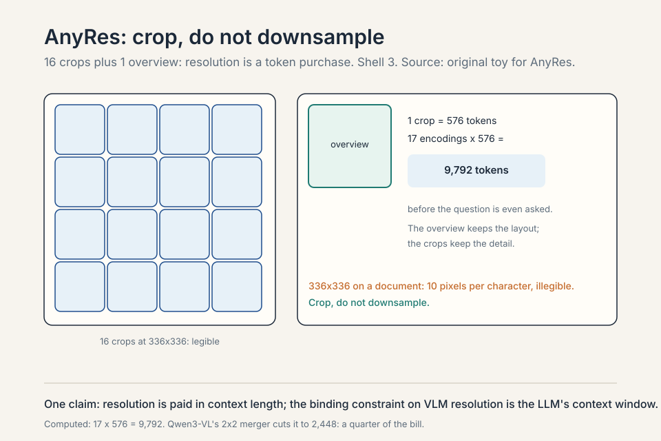
Option one: downsample to 336x336. Cost: 576 tokens. The document becomes illegible: 10 pixels per character. Option two: AnyRes. 16 crops at full resolution plus 1 overview: 9,792 tokens, every character legible, layout preserved by the overview. Option three: Qwen3-VL’s merger. 2x2 patch merging: each crop’s 576 tokens become 144. Total: 17 x 144 = 2,448 tokens. A quarter of the AnyRes bill, some detail lost in the merge. The choice is budget-driven: 32k context, one document, AnyRes fits. 32k context, ten documents, you need the merger. The rule: compute the token budget before choosing the resolution strategy. The encoder is never the bottleneck. The context window is. Because crops lose layout. Sixteen independent crops are sixteen independent images: the model sees each region but not their arrangement. The downsampled overview is one more encoding of the whole page at low resolution: it carries the global structure (two columns, a figure on the right) while the crops carry the detail. The model cross-references: layout from the overview, text from the crops. Without it, the model reads words but loses the page. The overview is the cheapest token in the budget: 576 tokens for the structure of everything. Fewer tokens per frame, more frames. Up to 32 frames, each frame encoded at reduced resolution (fewer crops, or downsampled). The token budget splits across time: 32 frames x tokens-per-frame must fit the context. The tradeoff: spatial detail versus temporal coverage. More frames: better motion understanding, worse per-frame detail. The lecture’s number (32 frames) is the template’s compromise. Qwen3-VL extends this to 256K context for long video: the budget grows, the tradeoff softens.
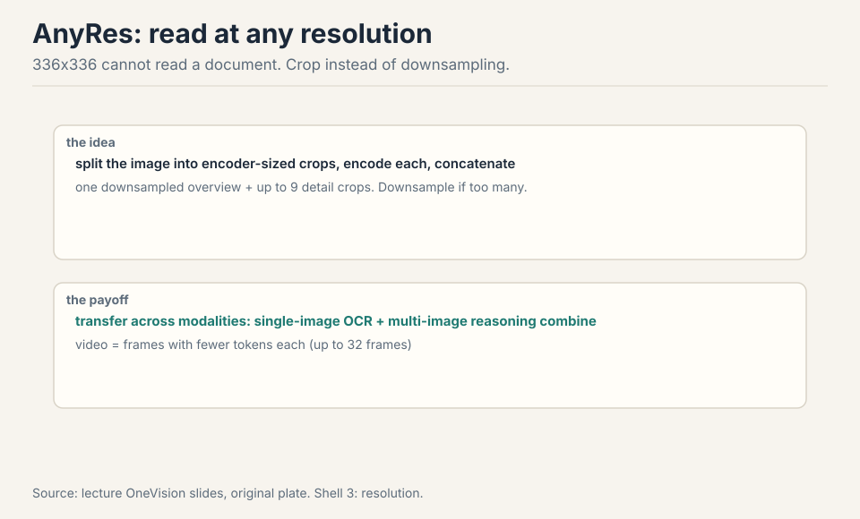
LLaVA OneVision (2024): SigLIP encoder, Qwen-2 decoder, 2-layer MLP projector, three training stages 35:25 ⏱35:25. The surprise: cross-modal transfer. Single-image OCR data plus multi-image relational data generalize to two-image table-plus-chart questions and video visual prompting, neither seen in training 43:30 ⏱43:30.
Subchapter: OneVision’s three stages
LLaVA OneVision: SigLIP encoder, Qwen-2 decoder, 2-layer MLP projector, three training stages. Stage 1: alignment (the projector, frozen ends). Stage 2: high-quality knowledge learning (unfreeze more, train on curated data). Stage 3: visual instruction tuning (the chat behavior). The third stage is the refinement: stage 2 teaches the model the world’s images, stage 3 teaches it to talk about them. The template’s evolution: more stages, better data, same stitching.
Subchapter: cross-modal transfer, the surprise
Single-image OCR data plus multi-image relational data generalize to two-image table-plus-chart questions and video visual prompting, neither seen in training. The model trained on single images and multi-image sets answers questions about image pairs it never saw paired, and about video it never saw as video. The transfer: the reasoning patterns (compare, relate, ground) transfer across input shapes. The lecture’s point: modalities transfer. Train the patterns on one shape, they work on another. This is the same generalization the course keeps finding: the transformer learns the operation, not the format.
Qwen-VL: three generations of sharper pieces
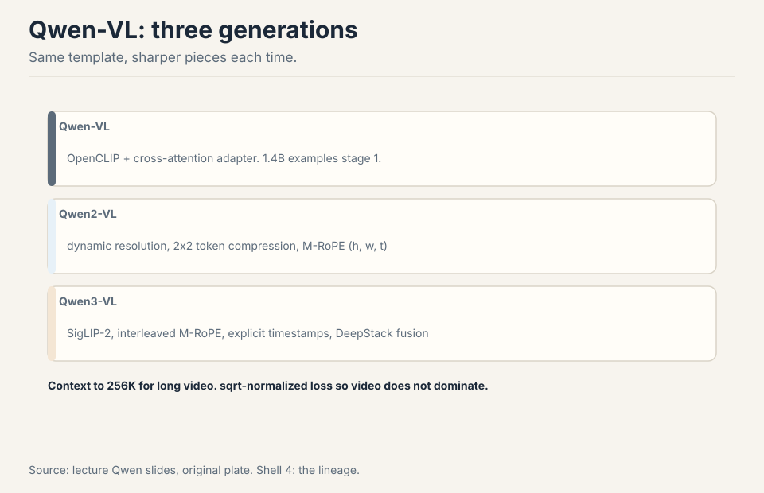
Qwen-VL: OpenCLIP, cross-attention adapter to 256 tokens, three stages with 1.4B examples in stage 1, bounding-box outputs 46:06 ⏱46:06. The cross-attention adapter: instead of concatenating all patch tokens, a small set of learned queries attends to the image and compresses it to 256 tokens. The compression is learned: the queries learn what to keep. Qwen2-VL: dynamic resolution (11k tokens for a big image, 8 for a tiny equation), 2x2 token compression, M-RoPE: RoPE over height, width, and time concatenated 49:16 ⏱49:16. Position now has three axes: where in the image, when in the video. Qwen3-VL: SigLIP-2, interleaved M-RoPE frequencies (every axis sees high and low frequencies), explicit timestamp tokens, sqrt-length normalized loss so video does not dominate, and DeepStack: vision layers fused directly into the LM residual stream 52:50 ⏱52:50. Context to 256K for long video. Training runs 8K to 32K to 256K.
Subchapter: generation one (Qwen-VL)
OpenCLIP encoder, cross-attention adapter compressing to 256 tokens, three training stages with 1.4B examples in stage 1, bounding-box outputs. Bounding-box outputs: the model emits coordinates, not just text: grounding as a first-class output. Generation one proved the template scales: 1.4B examples in stage 1, the stitching holds.
Subchapter: generation two (Qwen2-VL)
Dynamic resolution: 11k tokens for a big image, 8 for a tiny equation. Fixed resolution wasted tokens on small images and starved big ones. Dynamic resolution spends the token budget where the pixels are. 2x2 token compression: the merger halves the bill. M-RoPE: RoPE over height, width, and time concatenated. Position has three axes: where in the image (h, w), when in the video (t). The rotary frequencies split across the three: each axis gets its own subspace. Generation two fixed the two wastes: tokens (dynamic resolution) and positions (M-RoPE).
Subchapter: M-RoPE, unpacked
RoPE (Lecture 3) encodes position as rotation: each dimension pair rotates at a frequency. M-RoPE splits the dimensions into three groups: temporal (t), height (h), width (w). Each group rotates at its own frequencies. A video token’s position is (t, h, w): when in the video, where in the frame. The concatenation: the three rotary embeddings concatenate into one position encoding. The limitation the next generation fixed: the frequency allocation. Each axis got a fixed band: t the low frequencies, h and w the high (or similar). The bands were imbalanced: some axes saw only coarse positions, others only fine.
Subchapter: generation three (Qwen3-VL), verified
The Qwen3-VL technical report (arXiv:2511.21631), verified. Vision encoder: SigLIP-2, continued training with dynamic resolutions, 2D-RoPE plus interpolated absolute positions. Default: SigLIP2-SO-400M. SigLIP2-Large (300M) for the 2B and 4B models. Merger: two-layer MLP compressing 2x2 visual features into one token. Interleaved M-RoPE: the t, h, w components interleave across dimensions, so every axis sees high and low frequencies: the spectral bias fixed. Timestamp tokens: explicit text tokens marking video time: the model reads “when” as text. DeepStack: vision layers fused directly into the LM residual stream (not just at the input): the fusion goes deeper. Loss: sqrt-length normalized so video does not dominate. Context: 256K for long video. Training: 8K to 32K to 256K curriculum. Sizes: 2B/4B/8B/32B dense, 30B-A3B and 235B-A22B MoE. Thinking and non-thinking variants.
Subchapter: DeepStack, the deeper fusion
DeepStack: vision layers fused directly into the LM residual stream. The LLaVA template fuses at the input: image tokens concatenate with text tokens, one transformer. DeepStack fuses at multiple layers: vision features inject into the LM’s residual stream at several depths. The intuition: the input fusion forces the LM to carry the image through every layer. The deep fusion lets each layer pull the visual features it needs. The fusion moves deeper: from input concatenation (LLaVA) to cross-attention (Qwen-VL) to residual-stream fusion (DeepStack). Each generation moves the vision deeper into the language model.
Generation one (Qwen-VL): the LLaVA template at scale. OpenCLIP encoder, cross-attention adapter compressing to 256 tokens, three training stages with 1.4B examples in stage 1, bounding-box outputs for grounding. It proved the template scales. Generation two (Qwen2-VL): dynamic resolution and positions. Fixed resolution wasted tokens on tiny images and starved big ones: dynamic resolution gives 11k tokens to a big image, 8 to a tiny equation. 2x2 token compression halves the bill. M-RoPE: RoPE over height, width, and time concatenated, so position has three axes: where in the image, when in the video. Generation three (Qwen3-VL): deeper fusion. SigLIP-2 encoder, interleaved M-RoPE frequencies (every axis sees high and low frequencies, fixing the frequency allocation), explicit timestamp tokens, sqrt-length normalized loss (so long videos do not dominate the loss), and DeepStack: vision layers fused directly into the LM residual stream instead of only at the input. Context to 256K for long video. Each generation moved the fusion deeper: from input concatenation (LLaVA) to cross-attention (Qwen-VL) to residual-stream fusion (DeepStack). Because video is long. A 10-minute video has orders of magnitude more tokens than an image. Without normalization, the loss is dominated by video: the model optimizes for video and forgets images. Linear normalization (divide by length) would go too far: it would make each video token count for almost nothing. Sqrt-length is the compromise: long sequences are downweighted, but each token still matters. The general principle: the loss weights are part of the data mixture (Lecture 14). Unbalanced lengths are an unbalanced mixture, and the fix is the same arithmetic. The original M-RoPE partitioned dimensions: t got one frequency band, h another, w another. The bands were imbalanced: follow-up studies showed the imbalance degraded long-video understanding. Interleaved M-RoPE redistributes: the t, h, w components interleave across the embedding dimensions, so each axis is uniformly represented across low and high frequencies. Every axis sees both coarse and fine positions. The report’s claim: the balanced spectrum significantly improves long-range positional modeling for video. The fix is in the frequency allocation, not the architecture.
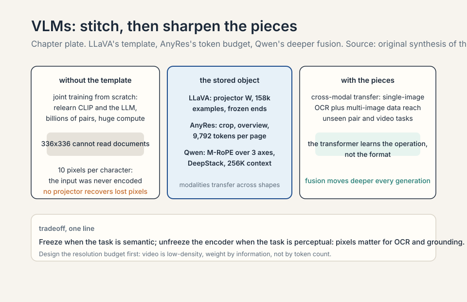
Chameleon: the discrete alternative
The elegant alternative: make everything discrete tokens. VQ-VAE maps a 512x512 image to 1,024 tokens from an 8,000-code codebook. Then it is just language-model training, no adapter 67:18 ⏱67:18. Interleaved text and images, true omni-style generation.
Subchapter: VQ-VAE, from zero
A VQ-VAE (vector-quantized variational autoencoder) compresses an image into discrete codes. The encoder maps the image to a grid of continuous vectors. Each vector is replaced by its nearest codebook entry: 8,000 codes, each a learned vector. The image becomes a sequence of code indices: 1,024 tokens for a 512x512 image. The decoder reconstructs the image from the codes. For Chameleon, the codes are the tokens: the transformer trains on code sequences exactly like text. No adapter, no projector, no staging: one token space for everything.
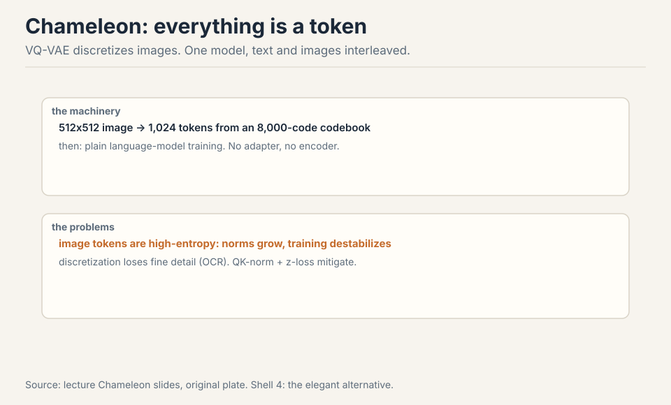
Subchapter: why discrete is elegant
One token space for everything. Text tokens and image tokens interleave in a single sequence: the model generates text, then image codes, then text, in one stream. No separate image generator: the transformer is the generator. Training is language-model training: next-token prediction on the mixed stream. The elegance is architectural unity: the omni model’s North Star, achieved by making images look like text. Chameleon is the purest expression of “transformers speak tokens.”
The problems, demonstrated. Image tokens are high-entropy (which exact blue?): parameter norms grow and training destabilizes. QK-norm and z-loss mitigate 72:11 ⏱72:11. Discretization loses fine detail, so OCR suffers: the codebook has 8,000 entries for all possible image patches, and small text falls between codes. Diffusion later won generation. VQ-VAE faded 74:28 ⏱74:28.
Subchapter: the entropy problem, mechanized
Image tokens are high-entropy: which exact blue? The next code is uncertain across hundreds of similar codes. The model’s logits spread wide. The gradients are noisy. The parameter norms grow to express the uncertainty. Training destabilizes. Text tokens are low-entropy by comparison: the next word is constrained by grammar and meaning. The fix: QK-norm (normalize queries and keys, bounding the attention logits) and z-loss (penalize large logits, Lecture 3’s stabilizer). Both bound the explosion. The mitigations work, but the entropy is structural: images carry more uncertainty per token than text.
Subchapter: the discretization tax
Discretization loses fine detail. The codebook has 8,000 entries for all possible image patches. A patch of small text: the exact letterforms fall between codes. The nearest code is an approximation: the text blurs. OCR suffers: the model cannot read what the codes did not preserve. The tax is the codebook’s resolution: 8,000 codes cannot cover the space of image patches at character precision. Continuous encodings (CLIP, SigLIP) preserve the detail: no quantization, no tax. The discrete design pays for its elegance in lost pixels.
Subchapter: diffusion won generation
Diffusion later won generation. The diffusion model: iterative denoising, continuous, micro-optimized for detail. It generates images the discrete transformer cannot: sharp text, fine textures, photorealism. The field split: continuous encoders for understanding (no information loss), diffusion for generation (micro-optimized detail). Chameleon’s discrete unity lost to the two-system pragmatism. VQ-VAE faded. The lecture’s verdict: the elegant alternative was elegant and wrong for generation.
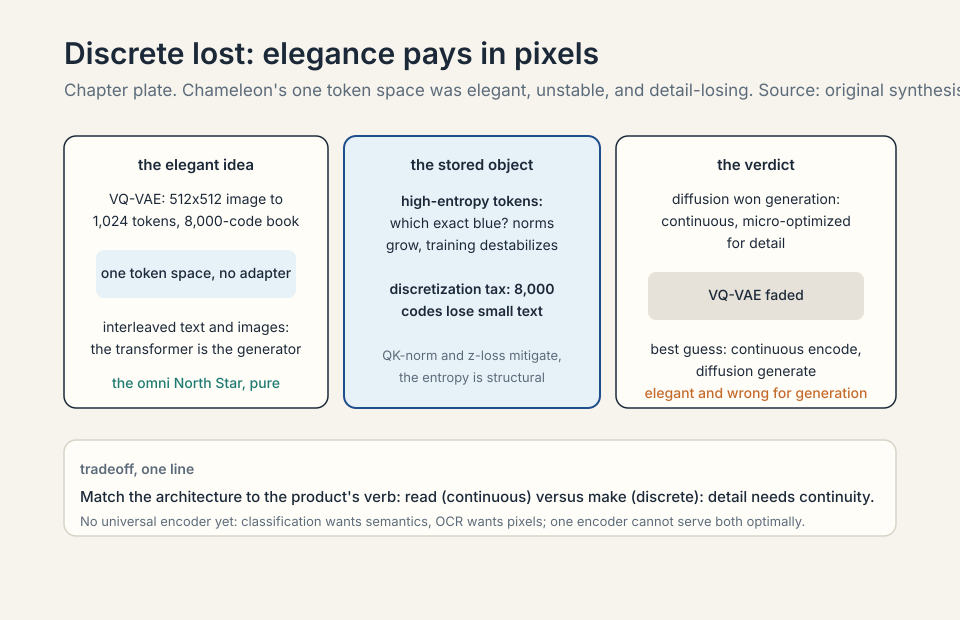
The frontier’s best guess
The best guess: continuous encoders for understanding (no information loss), diffusion for generation (micro-optimized detail) 74:43 ⏱74:43. That picture is the lecturer’s speculation, flagged as such.
Subchapter: the two-system pragmatism
The best guess is two systems. Understanding: continuous vision encoders (SigLIP-2 class), no quantization, full detail preserved, fused into the LM (DeepStack class). Generation: diffusion models, conditioned on the LM’s output, micro-optimized for pixel detail. The LM is the hub: it reads images through the encoder, writes prompts for the diffusion model. The unity is at the system level, not the token level. The speculation’s honesty: the frontier’s actual design is [uncertain]. The two-system picture is the lecturer’s inference from what is public.
Compute comparisons (TPUv3 vs v4) are not flops-normalized. Chameleon results were not shown in lecture. Persistent challenges: no universal encoder (classification wants semantics, OCR wants pixels), modality weighting (video is low-density, do not let it drown text), and systems (video loading alone can bottleneck training) 61:16 ⏱61:16.
Subchapter: no universal encoder
Classification wants semantics: what is in the image, at a glance. OCR wants pixels: the exact characters, at full resolution. One encoder cannot serve both optimally: the semantic encoder compresses away the pixels, the pixel encoder drowns in detail. The field’s answer: task-specific encoders, or dynamic resolution (spend pixels where the task needs them). The universal encoder is the open problem: the vision equivalent of BPE’s universality for text.
Subchapter: modality weighting
Video is low-density: most frames repeat the last one. Text is high-density: every token carries meaning. Train on mixed video and text without weighting: the video tokens dominate the loss (there are more of them) and teach less per token. The model drowns in video and starves on text. The fixes: sqrt-length normalization (Qwen3-VL), per-modality loss weights, data mixing by density (Lecture 14’s mixture arithmetic, applied to modalities). The principle: weight by information, not by token count.
Subchapter: video loading bottlenecks training
Systems: video loading alone can bottleneck training. Video is heavy: decode the frames, resize, encode, all before the GPU sees a token. The dataloader must feed the GPUs faster than they train. At VLM scale, the video pipeline (not the model) is the bottleneck. The fixes: pre-encoded features (encode once, train many times), faster codecs, more dataloader workers. The unglamorous truth: the multimodal frontier is gated by data loading, not by architecture.
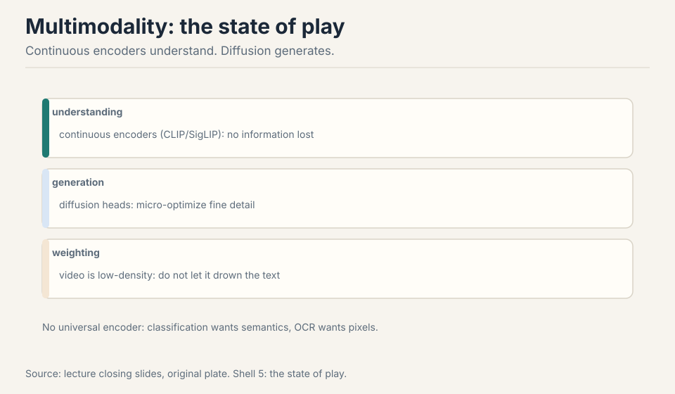
Start from the token budget. A contract page at readable resolution: AnyRes with 16 crops plus overview, ~10k tokens per page. A 10-page contract: 100k tokens. You need 128k+ context: pick the LLM accordingly. Encoder: SigLIP-2 (the current default), fine-tuned or at least unfrozen in later stages: document text is fine-grained, and frozen CLIP features are classification-flavored. Positions: M-RoPE over height and width, so the model knows where on the page each token sits (forms are positional: the total is bottom-right). Training: stage 1 alignment on document image-text pairs, stage 2 visual instruction tuning on document QA (where is the total? what date?), stage 3 DPO on hard cases. Do not use Chameleon’s discrete tokens: the codebook loses the small text you need. Do not downsample: 10 pixels per character is illegible. The decision rule: for documents, resolution is correctness. Buy it with context, compress with 2x2 merging, and never let the encoder be the bottleneck. When generation matters more than understanding. Discrete tokens make the model a true omni-model: it can generate interleaved text and images in one token stream, no diffusion decoder needed. The price: discretization loses fine detail (OCR suffers), high-entropy image tokens destabilize training (QK-norm and z-loss mitigate), and diffusion won generation anyway. For a document-understanding product, none of the benefits apply and all of the costs do. For a creative tool that edits images with text instructions in one stream, the discrete design is at least worth testing. Match the architecture to the product’s verb: read (continuous) vs make (discrete). The context is the cost. 100k tokens of image plus text: the KV cache is enormous, the prefill is slow. The mitigations: 2x2 merging (halve the image tokens), page selection (retrieve the relevant pages first, then read them at full resolution: RAG for documents), and KV cache compression (Lecture 18’s MLA). The architecture: a retriever picks the pages, the VLM reads the picks. Do not feed all 10 pages at full resolution every query: the token budget is the product’s margin.
Subchapter: the VLM data supply chain
The VLM data supply chain mirrors the text pipeline. LAION-5B: 5B image-text pairs, open, noisy. COYO: 700M pairs, cleaner. DataComp: the benchmark for filtering (which filtering choices move downstream scores). The lecture’s filtering lesson applies: the pairs are noisy, the funnel matters, the positive set is a hyperparameter. AI2’s VLM report (the lecture’s further reading) documents the data details the lecture skipped: the open VLM data recipe is the text recipe with images attached.
Subchapter: audio, the missing modality
The lecture covers vision. Audio is the missing modality: speech in, speech out. The tokenization problem repeats: what is the audio equivalent of BPE? The field’s answers: discrete audio codes (like VQ-VAE for sound) or continuous spectrogram features. The omni model’s North Star includes audio, but the lecture’s template (contrastive pretraining, projector stitching) was built for vision. Audio follows the same playbook with different tokens. The coverage here is deliberately thin: the lecture did not cover it, and the honest lesson marks the gap.
Stage one: the vision encoder. Contrastive pretraining on image-text pairs (LAION-5B scale, SigLIP loss): the encoder learns semantics. Filter the pairs: the DataComp lesson (which filtering moves downstream scores). Stage two: alignment. Image-caption pairs, train the projector only (LLaVA stage 1): the bridge. Stage three: visual instruction tuning. GPT-4-synthesized conversations from captions (158k scale to start, millions for the frontier): the chat behavior. Stage four (optional): unfreeze the encoder for fine-grained tasks (OCR, grounding). The data volumes: billions of pairs for the encoder, millions of conversations for the chat. The recipe is the text pipeline’s sibling: contrast (pretrain), align (project), instruct (tune). The lecture’s template, at data scale. The alignment conversations. Image-text pairs are abundant (the web is full of them). Good visual instruction data is scarce: it needs questions about specific images with correct answers. The synthesis pipeline (captions to GPT-4 to conversations) manufactures it, but the captions are the bottleneck: no caption, no conversation. The frontier’s advantage is partly proprietary: human-written visual instructions at scale. The open community synthesizes. The gap is the data moat, again.
What is used where: the vision encoder options
The encoders, mapped to who uses them, as of October 2026.
- CLIP (ViT-L/14): the original. Still the default frozen encoder in open VLM recipes. Compatibility choice.
- SigLIP / SigLIP-2: the current default. LLaVA OneVision uses SigLIP. Qwen3-VL uses SigLIP-2 (SO-400M). Better training, better localization, same binary loss.
- Qwen-VL series: the generation ladder. Qwen-VL (OpenCLIP), Qwen2-VL (dynamic resolution, M-RoPE), Qwen3-VL (SigLIP-2, interleaved M-RoPE, DeepStack, 256K context). The open frontier for document and video understanding.
- Frontier omni models (GPT-4o/GPT-5 class, Gemini): natively multimodal, details undisclosed [uncertain]. The lecturer’s best guess: continuous encoders plus diffusion generation.
The decision rule: default to SigLIP-2. Reach for CLIP only for compatibility. For documents: unfreeze the encoder and spend the token budget. For the frontier: the details are [uncertain], the direction is deeper fusion.
| Encoder | Loss | Who uses it | Rule | Source: original. |
|---|---|---|---|---|
| CLIP (ViT-L/14) | 2N-way softmax, batch-coupled | open VLM recipes, frozen | compatibility choice | lecture |
| SigLIP / SigLIP-2 | binary sigmoid, batch-independent | LLaVA OneVision, Qwen3-VL (SO-400M) | default for new VLMs | lecture |
| Qwen-VL series | varies by generation | Qwen-VL, Qwen2-VL, Qwen3-VL | documents and long video, 256K context | lecture |
| Frontier omni encoders | undisclosed | GPT-4o/GPT-5 class, Gemini | [uncertain] | lecture gap |
Shell 2. CLIP to SigLIP-2: the loss change that decoupled training from the batch size.
Mapping back: what each idea fixes
| Pain | Fix | How |
|---|---|---|
| Pixels are not semantic units | CLIP patches | 14x14 patches as tokens. Text supplies semantics via contrastive loss. |
| Loss needs huge batches | SigLIP | Binary sigmoid loss. Decoupled batches. 5 days vs 10. |
| Two good components, no bridge | LLaVA stitching | Projector W, staged training. 158k examples. Freeze both ends. |
| 336x336 cannot read documents | AnyRes | Crop, not downsample. Overview plus detail crops. Token budget first. |
| One resolution, one position | Qwen generations | Dynamic resolution, M-RoPE over 3 axes, DeepStack fusion. 256K context. |
| Adapters are inelegant | Chameleon | VQ-VAE discrete tokens. Elegant, unstable (entropy), detail-losing. |
| Generation needs detail | Diffusion | Continuous encode, diffusion generate. The two-system pragmatism. |
| Modalities drown each other | Weighting | Sqrt-length norm. Weight by information, not tokens. |
The honest price
Frontier models are natively multimodal, details undisclosed. The best guess: continuous encoders for understanding (no information loss), diffusion for generation (micro-optimized detail) 74:43 ⏱74:43. That picture is the lecturer’s speculation, flagged as such. Compute comparisons (TPUv3 vs v4) are not flops-normalized. Chameleon results were not shown in lecture. Qwen3-VL details verified from the technical report. Persistent challenges: no universal encoder, modality weighting, video loading bottlenecks.
Recap: the whole lesson on one screen
The story in nine steps. Each step answers the one before it.
- The omni goal. Any modality in, any out. Transformers speak tokens. A pixel is not a semantic unit: tokenization takes work.
- CLIP contrasts. 2N softmax problems on 400M pairs. ViT-L/14 patches. Zero-shot ImageNet beats supervised ResNet. Text gives semantics. The batch is the objective.
- The loss is the batch. CLIP needs 32K batches: 10 days on 256 TPUv3. Small batches learn lazy features.
- SigLIP decouples. Binary sigmoid loss, independent pair decisions. Small batches work. 5 days on 32 TPUv4. SigLIP-2 is the current default.
- LLaVA stitches. CLIP plus projector plus Vicuna. Align W, then fine-tune. 158k examples. Freeze both ends, train the bridge.
- AnyRes crops. 336x336 cannot read documents (10px per char). Crop, not downsample. 17 encodings, 9,792 tokens. The context window is the binding constraint.
- Qwen sharpens. Dynamic resolution, M-RoPE over 3 axes (interleaved in v3), DeepStack fusion into the residual stream. 256K context. Timestamp tokens. Sqrt-length loss.
- Chameleon discretizes. VQ-VAE: elegant, unstable (entropy: QK-norm and z-loss mitigate), detail-losing (OCR suffers). Diffusion won generation.
- The frontier’s best guess. Continuous encode, diffusion generate. No universal encoder yet. Weight modalities by information. Video loading is the systems bottleneck.
Go deeper
- Vision Language Models Explained (the embed above): https://www.youtube.com/watch?v=7VJpZCTz168
- Radford et al., CLIP: https://arxiv.org/abs/2103.00020
- Zhai et al., SigLIP: https://arxiv.org/abs/2303.15343
- Liu et al., LLaVA: https://arxiv.org/abs/2304.08485
- Qwen3-VL Technical Report: https://arxiv.org/abs/2511.21631
Official sources and further reading
Official: - Lecture 17 video. - CLIP, SigLIP, LLaVA, LLaVA-OneVision, Qwen-VL series, Chameleon papers. - Qwen3-VL technical report (verified).
Further reading: - LAION-5B / OpenCLIP (open replication). - VQ-VAE (Oord 2017). DeepStack adapter paper. - AI2’s VLM report (data details the lecture skipped).
Caveats from these sources. Frontier omni models are undisclosed [uncertain]. The “continuous plus diffusion” picture is the lecturer’s speculation, flagged as such. Compute comparisons (TPUv3 vs v4) are not flops-normalized. Chameleon results were not shown in lecture.
Connections to the other courses
- CS336 L01: tokenization generalized beyond text.
- CS336 L03: RoPE generalized to M-RoPE.
- CS336 L14: modality weighting is data mixing.
- CS224N: vision-language models from the NLP side.
Coverage map
Every major lecture claim, mapped to the section that covers it.
| Session claim | Covered in | File line |
|---|---|---|
| North Star: any modalities in, any out; image plus video in, answer plus generated image out | The problem: the omni model | 40 |
| Transformers speak tokens; image equivalent of BPE; pixel is not a semantic unit | why tokenization is the whole problem | 60 |
| Lecture covers inputs; generation sketched at end | inputs versus generation | 80 |
| CLIP (2021): N=32,000 pairs, encode each side, 2N softmax problems | First attempt: CLIP, contrastive learning | 91 |
| Toy N=4: dog/cat/car/bird; eight softmax problems | the contrastive idea, from zero | 99 |
| Contrastive matrix: diagonal pull, off-diagonal push; N=32,768, 32,767 negatives; batch is the objective; 10 days on 256 TPUv3 | work the contrastive matrix | 120 |
| ViT-L/14: 14x14 patches, positional embeddings, transformer, attention pooling | the two encoders; why patches | 141 |
| Text encoder: GPT-2 style, EOS activation as sequence vector | the text encoder’s EOS trick | 163 |
| Data: 400M web pairs, noisy (captions rarely literal) | 400M noisy pairs | 178 |
| Zero-shot ImageNet beat ResNet trained on 1.2M labeled images | the zero-shot headline, unpacked | 198 |
| Why text not augmentation (SimCLR): augmentation cannot turn one dog into another dog | why text beats augmentation | 209 |
| CLIP breaks: softmax over batch; small batch weak signal; 32,768 needed | Where CLIP breaks: the loss is the batch | 261 |
| Key question: loss independent of batch; judge each pair alone | The key question | 279 |
| SigLIP: binary classification, diagonal positive, sigmoid loss; N=4 toy, 16 independent decisions | SigLIP: binary loss, decoupled batches | 296 |
| Softmax vs sigmoid: no competition between negatives; expected loss batch-independent; 32K ceiling | softmax vs sigmoid | 307 |
| Systems win: local losses, rotate text embeddings, like DDP with interactions; 5 days on 32 TPUv4 | the systems win | 327 |
| LLaVA template: CLIP plus Vicuna plus projector, staged training | LLaVA: stitch, not rebuild | 388 |
| Image through CLIP, matrix W, concatenate; stage 1 trains W only; stage 2 trains W plus LM | (same section) | 388 |
| 158k GPT-4 conversations from COCO captions | the 158k conversations | 439 |
| Resolution break: 336x336 cannot read documents; ~10 pixels per character | Where stitching breaks: resolution | 515 |
| AnyRes: encoder-sized crops plus downsampled overview; crop not downsample; adaptive; 32 frames for video | (same section) | 515 |
| Token budget: 1344x1344 = 16 crops + overview = 9,792 tokens | the token budget of resolution | 541 |
| LLaVA OneVision: SigLIP, Qwen-2, 2-layer MLP, three stages | OneVision’s three stages | 608 |
| Cross-modal transfer: single-image OCR + multi-image data generalize to unseen pair/video tasks | cross-modal transfer, the surprise | 620 |
| Qwen-VL: OpenCLIP, cross-attention to 256 tokens, 1.4B stage 1, bounding boxes | generation one (Qwen-VL) | 656 |
| Qwen2-VL: dynamic resolution (11k big, 8 tiny), 2x2 compression, M-RoPE (h, w, t) | generation two (Qwen2-VL) | 665 |
| Qwen3-VL: SigLIP-2, interleaved M-RoPE, timestamp tokens, sqrt-length loss, DeepStack, 256K context, 8K-32K-256K training | generation three (Qwen3-VL), verified | 693 |
| Chameleon: VQ-VAE, 512x512 to 1,024 tokens, 8,000-code codebook; just LM training, no adapter | Chameleon: the discrete alternative | 773 |
| Image tokens high-entropy (which blue?); norms grow; QK-norm and z-loss mitigate | the entropy problem, mechanized | 816 |
| Discretization loses detail; OCR suffers; diffusion won generation; VQ-VAE faded | the discretization tax; diffusion won generation | 830 |
| Best guess: continuous encoders for understanding, diffusion for generation (lecturer speculation) | The frontier’s best guess | 855 |
| Persistent challenges: no universal encoder; modality weighting (video low-density); video loading bottlenecks | no universal encoder; modality weighting; video loading | 882 |
Builder stats
- Lines before: 372. Lines after: 1132.
-
subchapters: 39.
- Q&As: 8, each with full follow-up answers.
- Figures: 20 (16 SVG plates: 9 existing refs + 4 new lesson plates + 3 new chapter plates; 1 new inline table).
- Video embeds: 1 (youtube-nocookie, verified ID from prior build).
- Go-deeper links: 5 (4 arXiv, 1 YouTube).
- [uncertain] notes: frontier omni-model internals (undisclosed). Audio coverage marked as lecture gap.
Sources
- VIDEOLecture 17 video, Stanford Online YouTube
- NOTESOfficial subtitle transcript (en-US)